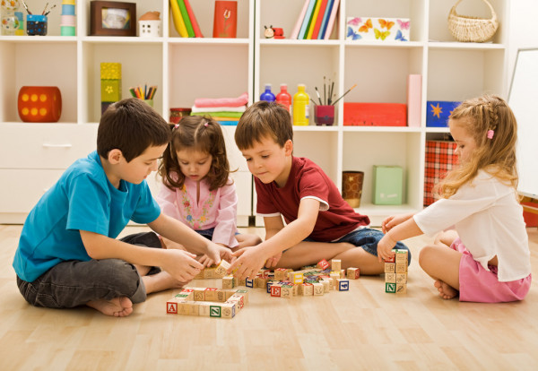
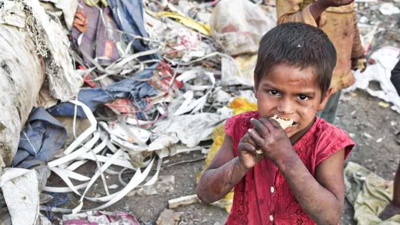
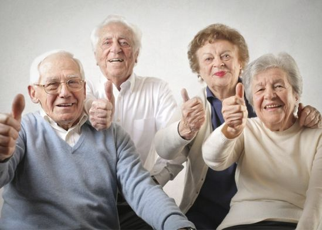
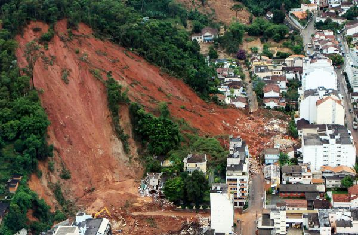

Causa social são soluções e projetos que indivíduos ou organizações defendem para combater determinado problema social. É o que move uma entidade, seja ela física ou jurídica, a agir com um propósito, a fim de conquistar um objetivo comum. Defender uma causa, de modo genuíno, leva a organização a atuar fora de seu segmento de mercado e de seus negócios, passando a atuar com propósitos.
Apoiar causas sociais pode fazer bem para quem é ajudado e quem ajuda. Ajudar o próximo traz mais felicidade, aumenta a qualidade de vida e melhora a produtividade no trabalho. Por isso, dar esse incentivo aos seus colaboradores faz toda a diferença.
Para termos uma ideia do que é uma causa social, logo abaixo está as principais causas sociais.
Quando o trabalho de uma organização envolve saúde, 40% dos brasileiros tendem a ser sensíveis. Exemplos de ONGs que atuam nessa área são a Associação de Apoio à Criança com Câncer (AACC); a Associação de Educação em Diabetes; e o Grupo de Incentivo à Vida (GIV), que apoia pessoas vivendo com HIV.
A Organização no Mundo da Saúde diz que "os determinantes sociais podem ser mais importantes do que os cuidados de saúde ou as escolhas de estilo de vida para influenciar a saúde". e "Esta distribuição desigual de experiências prejudiciais à saúde não é em nenhum sentido um fenômeno 'natural', mas é o resultado de uma combinação tóxica de políticas sociais ruins, arranjos econômicos injustos e más políticas". Podemos citar algumas doenças devido a magestão politica: obesidade, diabete, desnutrição e depressão.
Os temas infantis parecem ser o segundo motivo mais sensível, atingindo 36% dos brasileiros. Em guerras ou em situações de abandono, abuso, abuso e exploração de crianças, muitas crianças compartilham vídeos, imagens e notícias como provas. Algumas caractersticas que marcam esse estado de vulnerabilidade podem ser encontradas em moradias precarias, pobresa, fome, creise ecÔnomica, educação deficiente e entre outros.
O desenvolvimento social prepara a criança para o convívio com outras pessoas, a partir da construção das seguintes habilidades. Empatia é a capacidade de se colocar no lugar do outro, de se sensibilizar e de tentar ver uma situação pelo ponto de vista da outra pessoa.
Os fatores que causam a fome no mundo são vários, dentre os quais estão a desigualdade social, a probreza, os conflitos e guerras, as crises econômicas, a má ditribuição de alimentos e manejo inadequado dos recursos naturais. Logo, a ela tem relação direta com a má distribuição de renda e riqueza, mas também com a falta de acesso à educação que, em longo prazo, poderia aumentar as oportunidades de mobilidade intergeracional, com a falta de políticas públicas e de representatividade em cargos legislativos e até por aspectos sobre os quais.
E para isso mudar as empresas podem não só doar alimentos, como também diminuir o desperdício, criar políticas internas de alimentação, investir em projetos para combate à desnutrição e apoiar as ONGs do ramo. Enquanto isso, o Terceiro Setor pode distribuir refeições e cestas de alimentos.
A inclusão dos idosos é muito importante. Existem diversos trabalhos sociais que promovem novas possibilidades de vida social, educação e atividades para a população com mais de 60 anos. O tema mobiliza 21% dos brasileiros. O Projeto Velho Amigo é uma das organizações que trabalham com essa causa, visando tirar os idosos do isolamento, resgatando seu papel nas comunidades.
Apesar de muitos problemas após a terceira idade nos deparamos com projetos que vem mudando essa imagem. Existem diversos trabalhos sociais que promovem possibilidade inclusão em atividades a partir de 60 anos, como a ati (academia a terceira idade) projetos na área da saúde dando prioridade a essa faixa etária, mas um projeto que promete servir de modelo para o futuro um condomínio no estado do Paraná pensado exatamente para esse público. Um local com casas onde o projeto foi elaborado para satisfazer as necessidades dessas pessoas com espaço de lazer, academia, próximo às upas.
As causas das catástrofes limitaram-se a ser exclusivamente fenómenos de origem natural (sismos, erupção de vulcões, furacões, cheias), mas a intervenção humana e a evolução tecnológica provocaram o aumento da frequência de acontecimentos catastróficos súbitos e não planeados. As causas naturais são chuvas intensas e as atividades humanas, como depósitos de lixo e modificação na drenagem são as principais causas para a formação desse processo, principalmente quando os locais não têm infraestrutura adequada.
E para agente evitar existe algumas atitudes sugeridas por especialistas, que seriam: adotar um plano de contingência, procurar um seguro correto para proteger o patrimônio, procurar manter uma boa comunicação com o cliente e buscar auxílio das entidades e governo.
A causa da educação é principalmente o aluno que deixa de estudar, como: necessidade de entrar no mercado de trabalho, falta de interesse pela escola, dificuldades de aprendizado, doenças crônicas, deficiência no transporte escolar, falta de incentivo dos pais, mudança de endereço e entre outros.
Podemos melhorar a educação usaando sabiamente o tempo em sala de aula é uma das mais baratas e eficientes maneiras de melhorar a educação. O governo tem amplo papel na oferta da educação que todas as crianças merecem. Também, precisa garantir bons salários para os professores, verbas decentes para as escolas e políticas públicas que estimulem o desenvolvimento de todos.
Essas são as principais causas sociais. Você se identifica com alguma delas? Ou tem alguma outra causa com a qual você se identifica, mas que não apareceu na lista? Conte pra gente!